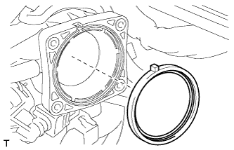
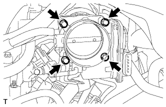
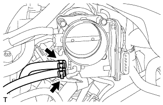
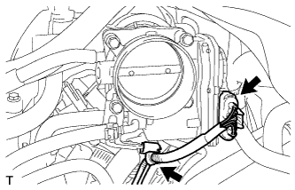
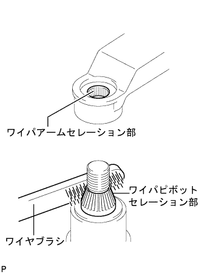

Throttle Body Assembly (2GR-FE) Installation |
| 1. Install Throttle Body Assembly |
 |
Install a new gasket to the intake manifold.
 |
Install the connector bracket and throttle body assembly with the 4 bolts.
 |
Connect the 2 water bypass hoses.
 |
Connect the wire harness clamp and throttle body connector.
| 2. Install Air Cleaner Cap w/ Air Cleaner Hose |
 |
Install the hinge portion first, and then install the air cleaner cap w/ air cleaner hose with the 3 clamps.
Install the clamp hose band. (*1)
Connect ventilation hose No.2. (*2)
Connect the air flow meter connector. (*3)
| 3. Add Coolant (Toyota Genuine Super Long Life Coolant) |
Close the radiator drain cock plug.
Close the cylinder block drain cock plug.
 |
Fill coolant of the specified concentration up to the B line of the radiator reserve tank.
After installing the reservoir tank cap, warm up the engine until the thermostat opens. (A)
After warm-up, repeat the cycle of 3000rpm engine speed for 5 seconds ←→ idling for 45 seconds 8 times or more (7 minutes or more). (B)
Stop the engine and wait until the coolant cools down, and if the level is below LOW, add coolant of the specified concentration through the filler again and adjust it to between FULL and LOW. (C)
Repeat steps (A) to (C) until the coolant level in the radiator reservoir tank stops dropping.
When the level stops dropping, add coolant of the specified concentration through the filler again to adjust the coolant level in the radiator reservoir tank to between FULL and LOW.
| 4. Inspect for Coolant (Toyota Genuine Super Long Life Coolant) Leaks |
 |
Fill the radiator with coolant and install a radiator cap tester.
Warm up the engine.
118kPa{1.2kgf/cm2Pump it to } and check that the pressure does not drop.
| 5. Install Cowl Top Panel Outer |
 |
Install the cowl top panel outer with the 8 bolts.
 |
Bend the heater air duct splash shield seal No.2 and water guard plate RH as shown in the illustration, and engage each clamp.
 |
Engage the windshield deicer wire harness connector and 3 clamps, and attach them to the cowl top panel outer. (w/ Cold Area Specification)
| 6. Install Cowl Body Mounting Reinforcement RH |
 |
Install the cowl body mounting reinforcement RH to the cowl top panel outer with the 3 bolts.
| 7. Install Windshield Wiper Motor & Link Assembly |
 |
Install the windshield wiper motor & link assembly with the 2 bolts.
Connect the connector.
| 8. Install Cowl Top Ventilator Louver RH |
 |
Engage the 5 claws and install the cowl top ventilator louver RH as shown in the illustration.
| 9. Install Front Side Panel Protector NO.1 RH |
 |
Engage the pin and install the front side panel protector NO.1 RH.
| 10. Install Cowl Top Ventilator Louver LH |
 |
Engage the 11 claws and install the cowl top ventilator louver LH as shown in the illustration.
| 11. Install Front Side Panel Protector NO.1 LH |
 |
Engage the pin and install the front side panel protector NO.1 LH.
| 12. Install Hood to Cowl Top Seal |
 |
Engage the 7 clips and install the hood to cowl top seal.
| 13. Install Front Wiper Arm & Blade Assembly LH |
 |
Stop the windshield wiper motor assembly at the automatic stop position.
Using a round file or equivalent, clean the wiper arm serrations. (When reassembling)
Using a wire brush, clean the wiper pivot serrations.
 |
Install the front wiper arm & blade assembly LH with the front wiper arm nut so that it is in the position shown in the illustration.
| 14. Install Front Wiper Arm & Blade Assembly RH |
 |
Using a round file or equivalent, clean the wiper arm serrations. (When reassembling)
Using a wire brush, clean the wiper pivot serrations.
 |
Install the front wiper arm & blade assembly RH with the front wiper arm nut so that it is in the position shown in the illustration.
Operate the front wipers while spraying water or washer fluid on the glass, and check the wiping condition of the blades and that they do not interfere with the body.
| 15. Install Front Wiper Arm Head Cap |
 |
Install the 2 front wiper arm head caps.
| 16. Connect Battery Negative Terminal |
| 17. Install V-bank Cover Sub-assembly |
 |
Engage the 3 clips to install the V-bank cover.
| 18. Install Engine Under Cover NO.1 |
Install engine under cover NO.2 with the 5 clips.
| 19. Setting Procedure When Disconnecting/Reconnecting Battery Terminal |
Reference| 20. Throttle Body Function Inspection |
Remove the EFI fuse and ETCS fuse at the same time, and connect the fuses after 60 seconds or more have elapsed.
After installing the throttle body to the vehicle, turn the IG ON without operating the accelerator pedal.
Connect SST (TaSCAN) to DLC3.
Connect SST (TaSCAN) to DLC3 and clear the DTCs.
Start the engine, and check that the check engine warning light is not illuminated and that the idle speed is within the standard when the A/C is turned ON → OFF after warm-up.
When the accelerator pedal is quickly depressed to near full open, check that the value of [ECU Data Monitor] - [Throttle Sensor No.1 Opening (THP1)] is 60% or more.
Perform a road test and check that there is nothing unusual.